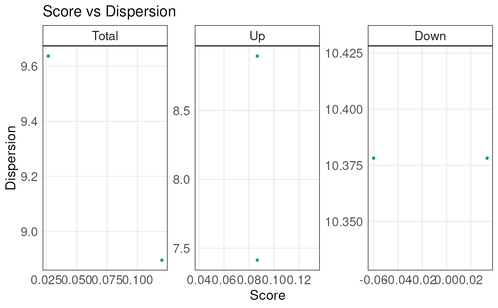

This function takes the output from the simpleScore() function
and generates scatter plots of score vs. dispersion for the total
score, the up score and the down score of samples. If you wish to use the
plotting function but with some customized inputs (instead of outputs from
simpleScore function), you need to make sure the formats are the same.
To be specific, you need to have columns names "TotalScore"
"TotalDispersion" "UpScore" "UpDispersion" "DownScore" "DownDispersion"
and rows names as samples.
plotDispersion(
scoredf,
annot = NULL,
annot_name = "",
sampleLabels = NULL,
alpha = 1,
size = 1,
textSize = 1.2,
isInteractive = FALSE
)data.frame, generated using the simpleScore() function
any numeric, character or factor annotation provided by the user that needs to be plot. Alternatively, this can be a character specifying the column of scoredf holding the annotation. Annotations must be ordered in the same way as the scores
character, legend title for the annotation
vector of character, sample names to display, ordered in the same way as samples are ordered in the 'scoredf' data.frame and with labels for all samples. Samples whose labels should not be displayed should be left as empty strings or NAs. Default as NULL which means the projected points are not labelled.
numeric, set the transparency of points
numeric, set the size of each point
numeric, relative text sizes for title, labels, and axis values
Boolean, determine whether the plot is interactive
A ggplot object
ranked <- rankGenes(toy_expr_se)
scoredf <- simpleScore(ranked, upSet = toy_gs_up, downSet = toy_gs_dn)
plotDispersion(scoredf)

plotDispersion(scoredf, isInteractive = TRUE)